Reading the Lineage Diagram¶
Alation Cloud Service Applies to Alation Cloud Service instances of Alation
Customer Managed Applies to customer-managed instances of Alation
When Alation has enough metadata to calculate lineage for a data object, the Lineage tab displays the available lineage data. If there is no lineage data, the Lineage tab can be used to manually create lineage for the object.
For the sources that support Lineage, Table > Table lineage (for Data Sources) and data source > report > dashboard lineage (for BI Sources) is calculated automatically by default. Certain data source connectors also support column level lineage. Dataflow objects are also created automatically if the target data object was created using a SQL query. Note that dataflow objects are not created automatically during extraction from BI sources.
Note
Automatic lineage calculation works only for sources for which Lineage is supported by Alation: see Support Matrices for details on supported features by source type.
There are two available views of lineage data, the classic view and the compound layout view, in Beta as of version 2023.3:
Classic View:
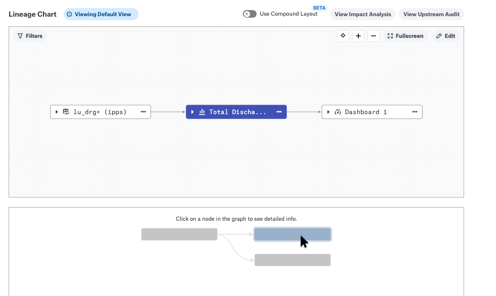
Compound Layout View:
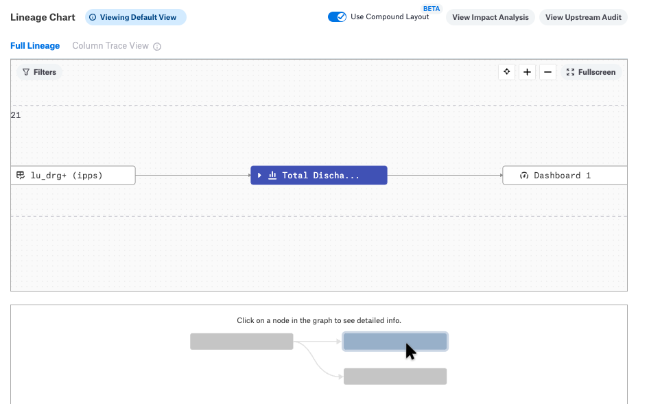
For more information on the compound layout view, see Use Compound Layout.
Note
If you do not see the Use Compound Layout toggle or the Edit button shown in the screenshots above, your version of Alation may be using an older version of lineage. To update to the latest, see Enabling Lineage V3.
Colors on the Lineage Diagram¶
When you open the Lineage tab on a catalog page of a data object, this main object is highlighted in blue. You can click other nodes, arrows, and Dataflow objects on the diagram: this will shift the blue highlighting to these nodes and, when available, will display their respective catalog pages in the page preview area under the diagram:
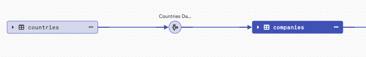
When you click a data object, its links (arrows) to other objects are automatically highlighted:
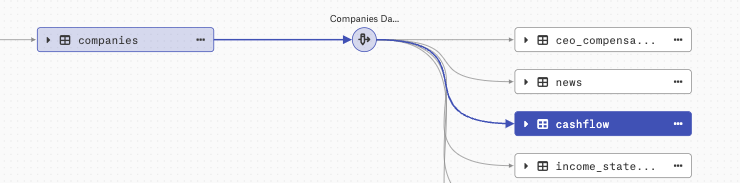
Deprecated objects are both highlighted in red and feature a badge resembling a stop sign, while objects to which deprecation is propagated from their source objects are highlighted in red:
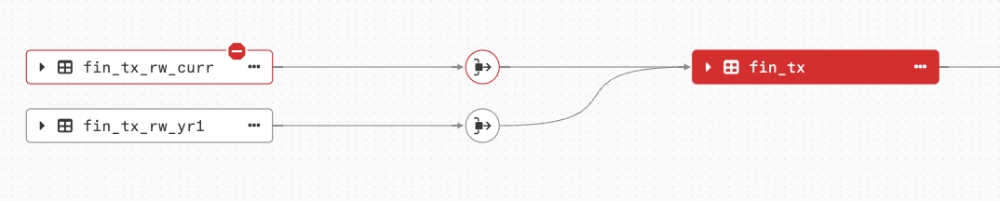
Exploring Lineage¶
When you select a data object on the diagram, you can view its catalog page in the preview area under the diagram area:
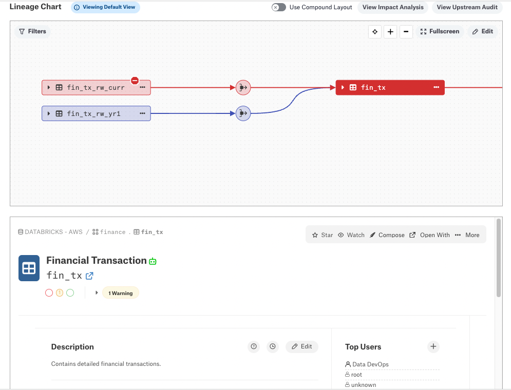
If an object type is not supported by the Alation catalog, the preview pane will tell you that Alation has no data associated with this object. Such objects are assigned the object type “external” and are labeled as External on the Lineage diagram: they are marked with the EXT badge. See Badges:
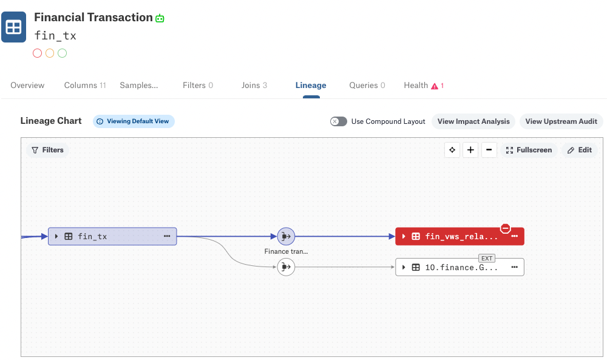
Badges¶
You will sometimes see badges on the nodes of the diagram. They signal that the data object is:
Temporary (TMP): objects of this type are supported by the Catalog, but this specific object is not present in the Alation Catalog metadata. It can be either an object that does not exist in Alation or an object that was deleted. Also see Filtering Dataflow Objects below.
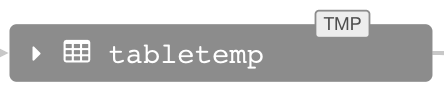External (EXT): objects of this type are not currently supported by the Alation Catalog and are represented with a generic object type external. Data with the external object type can be provided using the public API:
Deprecated: an object is flagged as Deprecated in the Alation Catalog:
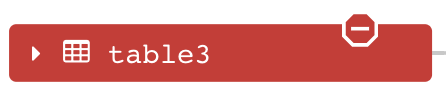
Starting with release 2020.4, Alation supports multiple badges for a single lineage node:
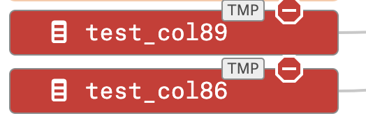
Deprecation¶
Deprecation is not only shown as a badge on the flagged object but is also propagated downstream to the target object. The links which pass deprecation are red too. Although the target object does not have the deprecation badge, it will be colored red too. You will see that such an object has a propagated Warning flag informing you that one of the parent objects is deprecated:
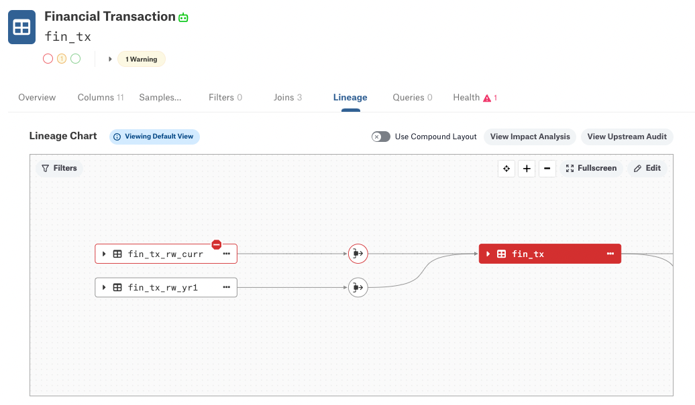
Number of Nodes¶
Extremely large lineage diagrams can be difficult to process and display; from release 2022.4, you can control both the horizontal and vertical extent of such diagrams. Earlier releases of Lineage V2 provided control over just the vertical extent. If you are an Alation Server Admin, see Modifying the Number of Nodes Displayed in Lineage Diagrams about how to set the number of nodes.
Horizontal Pagination¶
Horizontal pagination, new in release 2022.4, allows you to specify the number of nodes displayed by default before a user has to click to see more. If your Server Admin limited the number of nodes, larger diagrams may display horizontal pagination nodes that can be expanded to show more lineage:
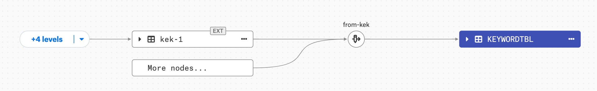You can click to show either four more levels or all levels:
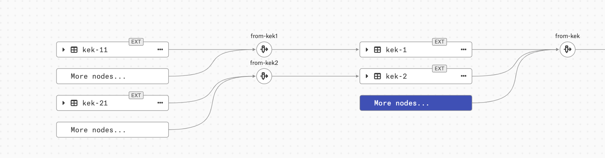Vertically Collapsed Nodes¶
On large multi-node lineage diagrams, some of the same-level nodes will be collapsed under a node named More nodes…
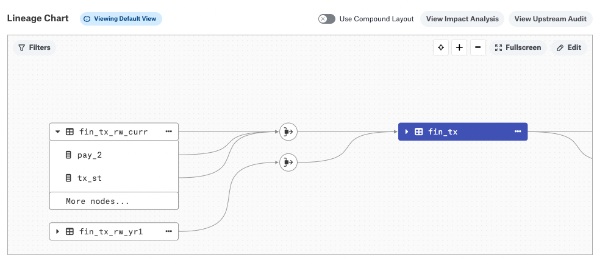
Click More nodes… to expand the box and view the collapsed nodes.
If multiple nodes are concealed by the More nodes… node, you can add nodes that are hidden under the More nodes… element to the diagram. To add the hidden elements:
Click More nodes… to open the list of hidden objects:
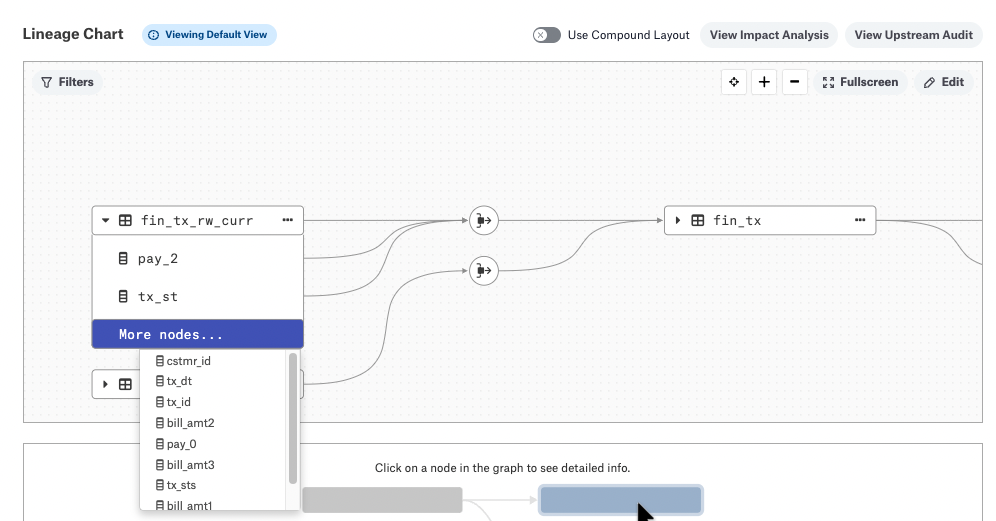
Click the node you want to add. It will be added to the diagram and removed from under the More nodes… node. This way, you can add all the collapsed nodes one by one to be explicitly displayed on the diagram.
View Column Level Lineage¶
In the classic view, you can view column-level lineage by expanding the parent object node to see the child columns and the associated lineage. To expand, click the Expand arrow icon on the data object:
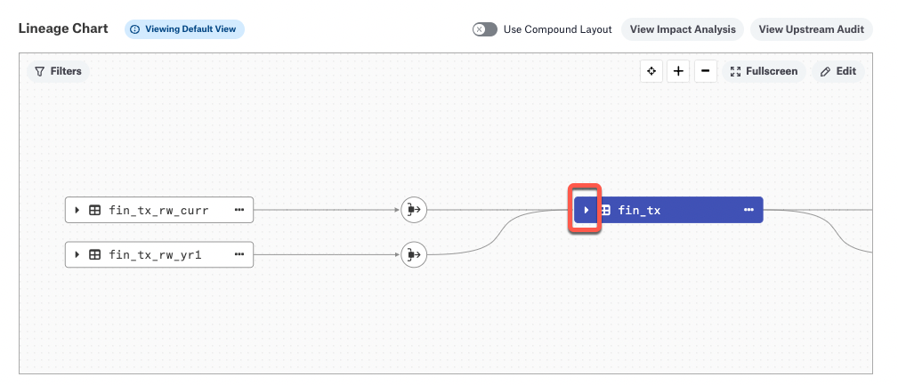
The parent node will be expanded to reveal the child nodes:
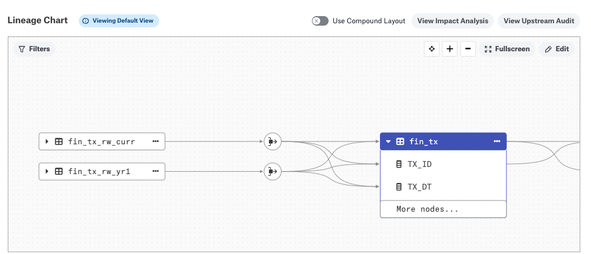
If there are many child nodes, some may be collapsed under a node labeled More nodes…. See Vertically Collapsed Nodes.
To collapse the parent and hide the column child objects, click the arrow icon again.
Use Compound Layout¶
From release 2023.1, the Use Compound Layout toggle provides an alternative view of the lineage data, organized by the data source or dataflow object group to which the object belongs. The compound layout view is well suited for visualizing data movement across data sources and for isolating particular areas of interest with the column-level tracing feature, described below.
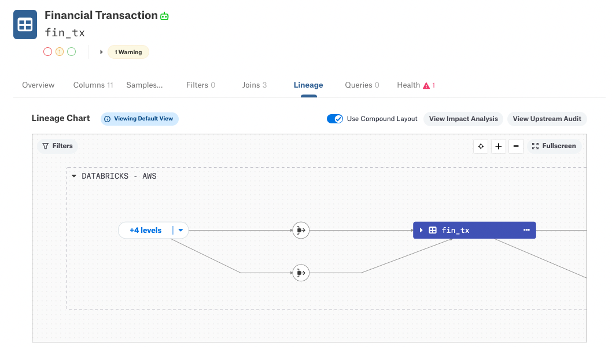In the example below, the Financial Transaction data is shown grouped by the data source Databricks - AWS:
From release 2023.3.2, the compound layout view shows an appropriate logo for the data source, if available:
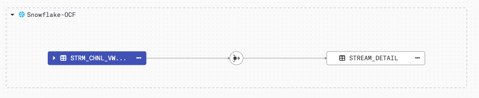Compared to the classic lineage view, the compound layout collapses more nodes by default. Click the +4 levels button to expand the upstream nodes:
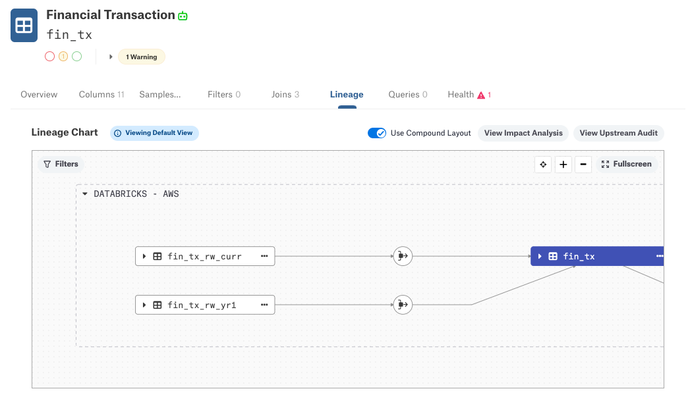When in the compound layout, you may see additional upstream and downstream lineages that are not directly linked to the main object. See Viewing Source and Target Objects.
In the compound layout, you can view column-level lineage for one column at a time. You expand as before, by clicking the Expand arrow icon on the data object:
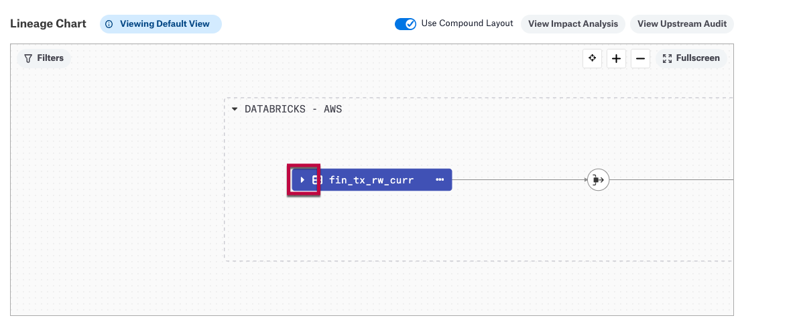
A list of the columns appears:
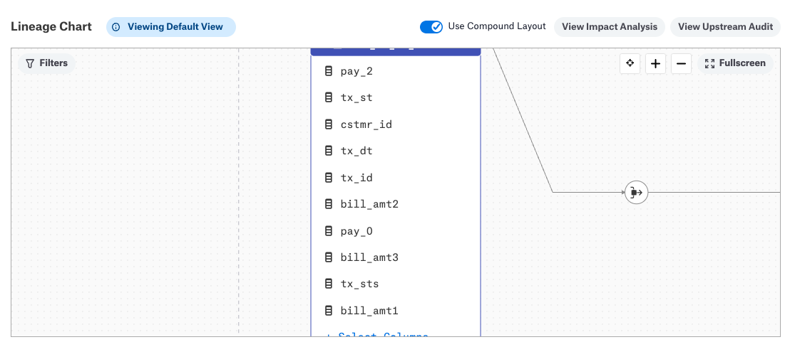
Hover over a column name and a Trace Lineage button will appear beside the column name:
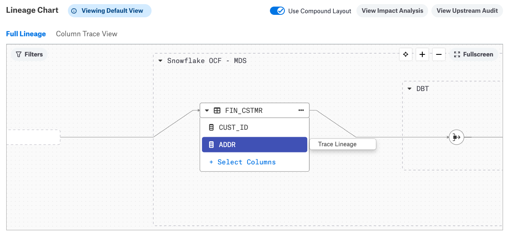
Click the Trace Lineage button. When the lineage trace is ready, a message appears with a View button:
Click View to enter the Column Trace View, which shows the lineage for the selected column.
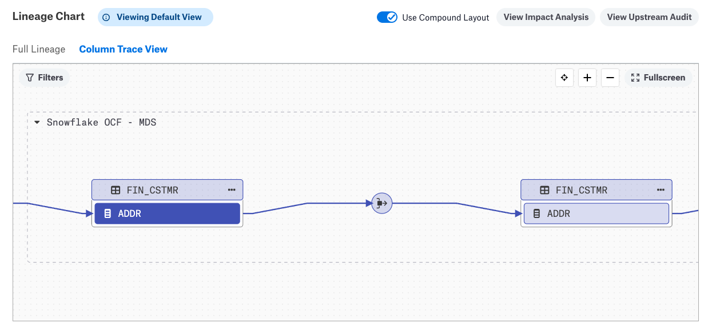
You can move between this Column Trace View and the Full Lineage view by clicking their respective labels at the top of the lineage chart.
Viewing Source and Target Objects¶
In both the standard and compound view, the Lineage diagram can display additional upstream and downstream lineages that are not directly linked to the main object. For example, if a data object has links to more than one source or target tables, this additional lineage data can be revealed. You may notice that each data node on a Lineage diagram has “three dots” displayed on the right of the node:
{kind=link}
To explore additional lineage links for data objects on the diagram, click the three dots on the node and in the list that opens, click either Show parents or Show children:
{kind=link}
Show parents reveals all upstream lineage for an object (source objects)
Show children reveals reveal all downstream lineage (target objects)
The additional source or target objects that are not directly linked to the “main” object—the object on the page from which you opened the Lineage diagram—will be connected using dotted lines:
{kind=link}
Filtering Dataflow Objects¶
Available from release 2022.3
It is possible to exclude groups of lineage paths using the Filters button in the lineage chart. You can filter using dataflow sources, which are groups you define and manage, as well as show or hide temp objects.
If you have defined one or more dataflow sources, they will appear under Dataflow Source in the Filter Lineage to: dialog. To select all the sources, click Select all. Otherwise, select one or more of the defined sources.
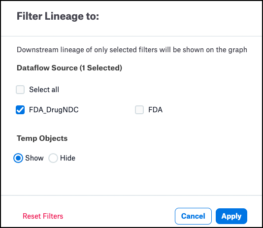
Click Apply to apply the filter. The lineage diagram will be redrawn to show those paths that, if they have a dataflow source defined, match the selected sources. Paths for which no source is defined are also shown.
{kind=link}
Similarly, if you choose the Hide button under Temp Objects, the Lineage diagram will be re-drawn without temporary objects. For example, here is a Lineage diagram with several temporary objects:
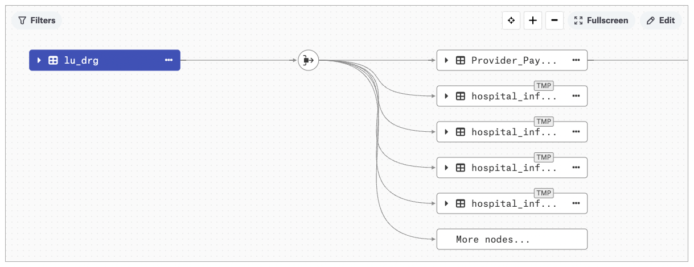
After applying the Hide button:
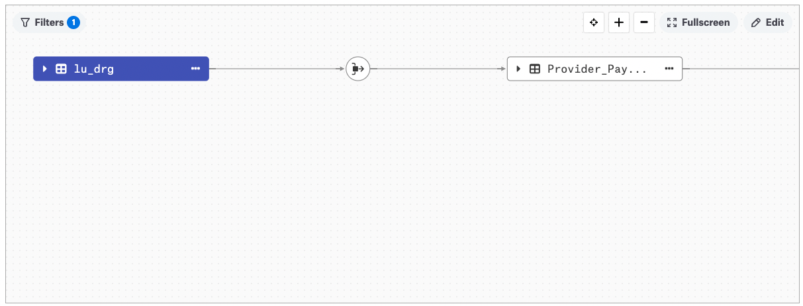
Full-Screen Lineage View¶
Available from release 2020.4
You can explore the Lineage diagram in the full-screen mode.
In the top right corner of the diagram, click the Fullscreen button to enter the full-screen mode:
{kind=link}
In the full-screen mode, you can:
Use all other features of the diagram, such as zooming in or out, filtering dataflows, centering the main node, and dragging the diagram.
Re-size the diagram and preview panel by dragging the divider left-right or top-down depending on the view orientation.
Rearrange the diagram and the preview panel vertically or horizontally.
Click Close on top right to exit the full-screen mode.
{kind=link}
Tabular Lineage Reports¶
Applies from release 2021.1
You can view the downstream or upstream lineage of an object in a tabular format. See Lineage Impact Analysis